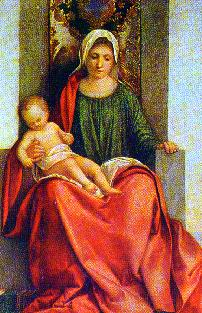

O PRIMEIRO AMOR
O profeta Jeremias em seu livro
escreve as palavras do PAI ETERNO, atestando que a criação nasceu
de uma inspiração amorosa Divina, num mesmo instante, porque DEUS

amou-nos todos de uma só vez. O nascimento para a vida
ocorre num desdobramento lento e criterioso, ao longo dos séculos,
de conformidade com as leis da natureza que ELE Mesmo criou,
obedecendo uma determinada cronologia que ordena e disciplina,
sem contudo interferir na liberdade individual que concede
às suas criaturas:
"Antes
que no seio ( de sua mãe )
fosses formado, EU já te
conhecia; antes de teu nascimento, EU já te havia consagrado, e
te havia designado profeta das nações". (Jr 1,4-5)
Esta citação propõe que
no momento da criação, quando DEUS fez o primeiro homem
e a primeira mulher, a humanidade de todas as gerações também
estavam presentes no Coração do CRIADOR. E naquele mesmo
instante, ELE conheceu cada um, amou-nos do mesmo modo com
a grandeza de um amor sem limites, deu-nos um nome e concedeu-nos
uma missão, a fim de que utilizando com inteligência e amor os dons
que nos concedeu, habilitássemos a receber a recompensa eterna
que prazerosamente quer dar à todos os seus filhos. E procedeu
assim, porque DEUS é misericórdia eterna e bondade infinita,
suas Obras e decisões são completas e acabadas, não necessitam
de retoques e nem de emendas.
Dessa
forma, vendo também que as forças do mal empregariam todos os
recursos, seduzindo e construindo poderosas trincheiras no interior
das pessoas, para impedi-las de realizar o projeto de vida e buscar
a santificação pessoal, na plenitude dos tempos enviou-nos JESUS,
o Seu Divino FILHO, que lavou a humanidade com seu Sangue
Redentor e tirou-nos do reino das trevas e da ignorância de DEUS,
deixando-nos ensinamentos, a sua admirável Obra e meios eficazes
para a nossa conversão e salvação definitiva, transformando-nos
em verdadeiros "
Filhos de DEUS".
São João em sua primeira
carta, realça a grandeza da atitude do PAI ETERNO:
"Considerai
com que amor nos amou o PAI, para que sejamos chamados filhos de
DEUS. E nós o somos de fato".
(1 Jo 3,1)
A imensidão do Amor de DEUS
albergado no interior do Coração Divino, inundou a alma da humanidade
marcando-nos indelevelmente com sua desmedida ternura, de tal
forma, que cada pessoa, guarda no coração uma lembrança do
PAI ETERNO, da grandeza de um carinho ilimitado e inesgotável,
assim como da beleza do CRIADOR e da indescritível solenidade
daquele sagrado momento da criação, quando ELE pleno de júbilo
se enterneceu em gerar
"vida". As criaturas sensibilizadas
gravam no recôndito mais profundo da mente, misteriosamente e de
maneira oculta, a maravilhosa lembrança daquele instante, um
acontecimento único e deslumbrante, que será inesquecivel e recordado
como o Primeiro e Sagrado Amor de nossa existência, muito embora, não
temos meios e nem recursos para remover as cortinas dos séculos e
defrontar-nos mentalmente, com plena clareza e perfeição, daquela visão
magnífica e daquele momento sublime e singular.
Assim, em face da preciosa
oferta Divina, concedendo-nos o dom da vida, configura a necessidade
da humanidade exercitar ao longo da existência, um digno e irrepreensível
comportamento moral, que será a nossa resposta decidida e efetiva de
concordância e plena aceitação de nosso Primeiro Amor.
Todavia, em face da liberdade que
o CRIADOR nos deu estar sendo usada de modo distorcido e defeituoso
pela humanidade, "aquele
precioso amor", especialíssimo Dom Divino,
cresceu na grande maioria das criaturas de maneira desordenada, incorreta
e deformado, pela falta de instrução e ausência de uma
orientação adequada e eficaz.
JESUS falou:
"EU vim
para que tenham a vida e a tenham em abundância". (Jo 10,10)
Por essa razão, ao longo da caminhada
existencial, o coração da humanidade precisa ser trabalhado, a fim
de ser orientado pelo caminho do direito, da justiça e do amor fraterno,
porque também só assim será estimulado o bom-senso e discernimento das
pessoas, permitindo-lhes perceber no cotidiano a presença misericordiosa
do SENHOR, que proporciona a seus filhos: auxílio, força, coragem e
proteção, para vencerem os obstáculos que surgem e seguirem no
cumprimento da missão e na busca do polimento espiritual,
melhorando as qualidades pessoais e apurando as virtudes,
através das dificuldades e dos acontecimentos de cada dia.
trabalhado, a fim
de ser orientado pelo caminho do direito, da justiça e do amor fraterno,
porque também só assim será estimulado o bom-senso e discernimento das
pessoas, permitindo-lhes perceber no cotidiano a presença misericordiosa
do SENHOR, que proporciona a seus filhos: auxílio, força, coragem e
proteção, para vencerem os obstáculos que surgem e seguirem no
cumprimento da missão e na busca do polimento espiritual,
melhorando as qualidades pessoais e apurando as virtudes,
através das dificuldades e dos acontecimentos de cada dia.
O comodismo, a indiferença, o
desconhecimento ou a falta de empenho na busca da verdade,
conduzem as pessoas a um afastamento de DEUS, que por certo
produzirá desapontamento e arrancará no Coração do SENHOR
um grito de nostalgia, conforme a inspiração de São João
Evangelista no Apocalipse:
"Arrefeceste
o teu Primeiro Amor"? (Ap 2,4)
Entretanto, alguém poderia questionar:
mas como nós humanos, podemos retribuir e demonstrar de modo
evidente um sincero e fervoroso amor ao CRIADOR?
São João Evangelista apresenta-nos a
resposta de JESUS, quando ELE foi interrogado por Tomé e Felipe.
O diálogo foi assim:
Disse JESUS: "EU SOU o Caminho, a
Verdade e a Vida. Ninguém vem ao PAI a não ser por MIM. Se ME
conheceis, também conhecereis a Meu PAI. Desde agora O conheceis
e O vistes".
Felipe lhe diz: "SENHOR, mostra-nos o PAI e
isto nos basta!" Respondeu-lhe JESUS:
"Há tanto tempo
estou convosco e tu não ME conheceste, Felipe ? Quem ME viu, viu
o PAI. Como podes dizer: Mostra-nos o PAI ? Não crês que estou
no PAI e o PAI está em MIM ? As palavras que vos digo, não as
digo por MIM Mesmo, mas o PAI, que permanece em MIM, realiza Suas
Obras. Crede-ME: EU estou no PAI e o PAI em MIM. Crede-o, ao
menos, por causa destas obras".
(das obras que EU faço) (Jo 14,6-11)
JESUS nos ensina que ELE e o PAI
são UM em plena comunhão de amor. Quem aceitar JESUS estará acolhendo o
CRIADOR. Por isso, o DEUS ETERNO quer o reconhecimento filial dos fieis,
mandando que todos sigam JESUS, o FILHO DE DEUS, porque ELE é o
Caminho que conduz ao PAI ETERNO, é a Verdade e a Vida. Quanto mais
nos unirmos a JESUS através dos sacramentos, das obras e orações, estaremos
mais unidos ao CRIADOR, seremos acompanhados e impulsionados pelo
ESPÍRITO DO SENHOR , que nos proporcionará as Divinas alegrias
e evidenciará em nossa vida, em função da intensidade e grandeza da fé,
o inefável Mistério do PAI, do FILHO e do ESPÍRITO
SANTO.
Esta afirmação se fundamenta na
realidade de que o Mistério
da Santíssima Trindade representa a origem e o fim da mensagem cristã, e por
conseguinte, a realidade que ele encerra deve ser idêntica ao "evento CRISTO", isto é, deve ser representada pela Pessoa, Mensagem,
Ensinamentos e pela Obra do SENHOR JESUS.
Por todas estas razões, amar o PAI
ETERNO acima de todas as coisas, é ser reconhecido a Quem nos criou
e nos deu a vida, que colocou o ESPÍRITO SANTO em nosso coração
enchendo-nos de virtudes e de amor, que mandou JESUS seu Divino
FILHO para nos redimir, tirar-nos da ignorância de DEUS e
deixar-nos meios eficazes para alcançarmos a vida eterna.
Entretanto, é necessário discernir, só alcançaremos o PAI através
do FILHO. Assim, só conseguiremos demonstrar a grandeza de
nosso amor ao PAI ETERNO através dos meios que JESUS,
colocou a nossa disposição.
Dessa forma, a Sagrada Escritura
nos faz compreender que a busca para reencontrar o Primeiro Amor,
deverá nascer no interior do coração e não na curiosidade da mente,
deverá crescer e desenvolver cada dia, através do esforço de exercitar
em plenitude o Mandamento do Amor, vivendo com segurança e
intensidade as graças que recebemos ao nascer e aquelas que
alcançamos por meio dos Sacramentos e das Obras, porque será
somente realizando este esforço é que perceberemos o PAI ETERNO,
o FILHO e o ESPÍRITO SANTO em nossa vida e sentiremos
o bem e o consolo que ELES derramam em nossa alma.

 Próxima Página
Próxima Página

 Página Anterior
Página Anterior
Retorna ao Índice